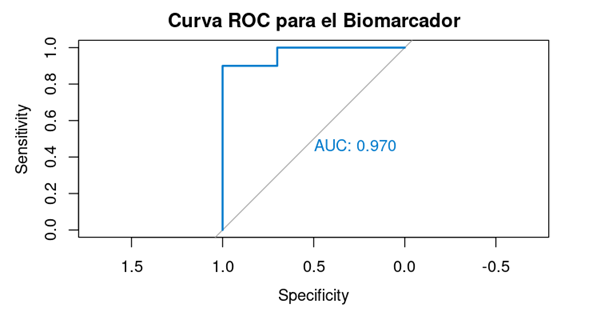

Unidad 3
Guía de Estudio: Cuantificando la Incertidumbre
Una misión de exploración para navegar los conceptos que definen el arte y la ciencia del diagnóstico moderno. ¡Haz clic en cada sección para descubrir, interactuar para aprender y ponte a prueba para conquistar!
La práctica de la medicina es, en su esencia, un ejercicio de manejo de la incertidumbre. A diferencia de las ciencias exactas, la medicina trata con probabilidades, no con certezas absolutas. Esta guía te dará las herramientas para cuantificar, interpretar y comunicar esta incertidumbre, una competencia clínica esencial.
Dos Niveles de Incertidumbre:
- Incertidumbre Metrológica: ¿Es precisa la medición del laboratorio? Se enfoca en la variabilidad inherente al proceso de medición.
- Incertidumbre Diagnóstica: ¿Qué significa este resultado para mi paciente? Aborda la probabilidad de que un paciente tenga o no una enfermedad.
Para navegar esta incertidumbre, usamos herramientas como sensibilidad, especificidad, valores predictivos y curvas ROC. Son el lenguaje para traducir datos en probabilidades clínicamente significativas.
Para evaluar una prueba, la comparamos con un "gold standard". Los resultados se organizan en la famosa tabla de 2x2, la base de todo.
| Enfermedad Presente | Enfermedad Ausente | |
|---|---|---|
| Prueba Positiva | Verdaderos Positivos (VP) | Falsos Positivos (FP) |
| Prueba Negativa | Falsos Negativos (FN) | Verdaderos Negativos (VN) |
Sensibilidad (S)
La capacidad de la prueba para identificar correctamente a los enfermos. Ideal para pruebas de cribado (screening) donde no quieres dejar pasar ningún caso.
S = VP / (VP + FN)
Especificidad (E)
La capacidad de la prueba para descartar correctamente a los sanos. Crucial para pruebas de confirmación, para evitar tratamientos innecesarios.
E = VN / (VN + FP)
Recuerda: Sensibilidad y especificidad son propiedades intrínsecas de la prueba y no dependen de qué tan común (prevalencia) es la enfermedad.
Aquí es donde la estadística se encuentra con la realidad clínica. Un paciente pregunta: "Doctor, mi prueba es positiva, ¿estoy enfermo?". La respuesta depende de los valores predictivos.
Valor Predictivo Positivo (VPP)
Probabilidad de que un paciente con un resultado positivo realmente tenga la enfermedad.
VPP = VP / (VP + FP)
Valor Predictivo Negativo (VPN)
Probabilidad de que un paciente con un resultado negativo realmente esté sano.
VPN = VN / (VN + FN)
¡El Factor Decisivo: La Prevalencia!
A diferencia de S y E, los valores predictivos dependen enormemente de qué tan común es la enfermedad (prevalencia) en la población que estás estudiando. ¡Vamos a demostrarlo!
Calculadora Interactiva de Prevalencia
Usemos una prueba con Sensibilidad del 99% y Especificidad del 95% en una población de 10,000 personas. Mueve el control deslizante para cambiar la prevalencia y observa cómo cambia el VPP.
VPP
51.0%
VPN
99.9%
Con una prevalencia del 5%, un resultado positivo solo es correcto la mitad de las veces.
Muchas pruebas no son "positivas" o "negativas", sino que dan un valor continuo (ej. glucemia). ¿Dónde ponemos el punto de corte? La curva ROC (Receiver Operating Characteristic) nos muestra el rendimiento de la prueba en todos los puntos de corte posibles.

La curva ROC grafica Sensibilidad vs. 1 - Especificidad. Cuanto más se "abomba" hacia la esquina superior izquierda, mejor es la prueba.
El Área Bajo la Curva (AUC)
Es un número único que resume el poder discriminatorio total de la prueba. Va de 0.5 (inútil, como lanzar una moneda) a 1.0 (perfecta).
- 0.90 - 1.00: Excelente
- 0.80 - 0.90: Bueno
- 0.70 - 0.80: Aceptable
- < 0.70: Pobre / No útil
¡Pon a prueba tu conocimiento!
Una nueva prueba para la enfermedad X tiene un AUC de 0.95. Una prueba estándar existente tiene un AUC de 0.82. ¿Qué significa esto?
Es hora de aplicar la teoría. Los siguientes ejercicios están diseñados para ser ejecutados en la nube usando Posit Cloud, por lo que no necesitarás instalar ningún software en tu computadora.
Ejercicio 1 (Python): Calcular Sensibilidad y Especificidad
Usa el siguiente código en un notebook de Jupyter en Posit Cloud para calcular los indicadores básicos de una prueba diagnóstica.
# Código de ejemplo para Python
y_true = [1, 1, 1, 0, 0, 0, 1, 0, 0, 1]
y_pred = [1, 0, 1, 0, 1, 0, 1, 0, 0, 1]
# ... (resto del código)Ejercicio 2 (R): Generar y Analizar una Curva ROC
Usa los siguientes bloques de código en un proyecto de RStudio en Posit Cloud para generar una curva ROC y calcular su AUC.
# 1. Instalar y cargar el paquete
if (!require(pROC)) install.packages("pROC")
library(pROC)# 2. Crear datos y analizar
datos_pacientes <- data.frame(...)
# ... (resto del código)